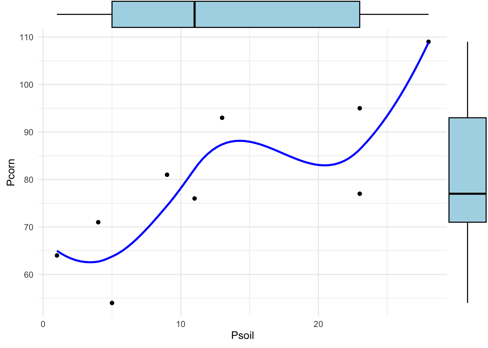
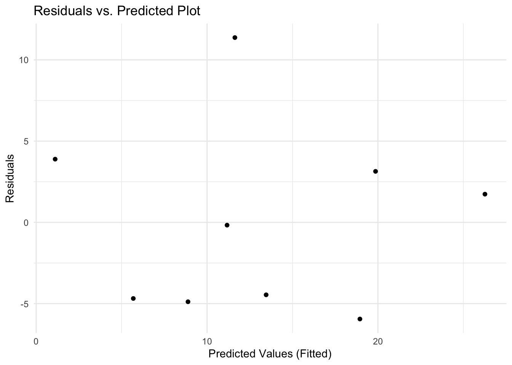
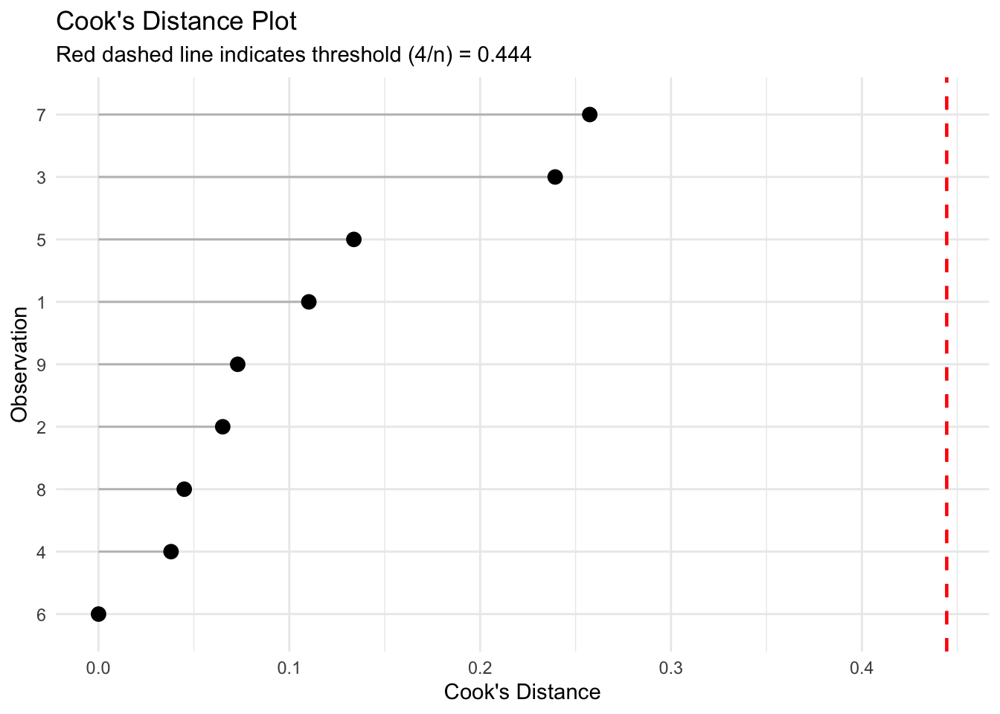
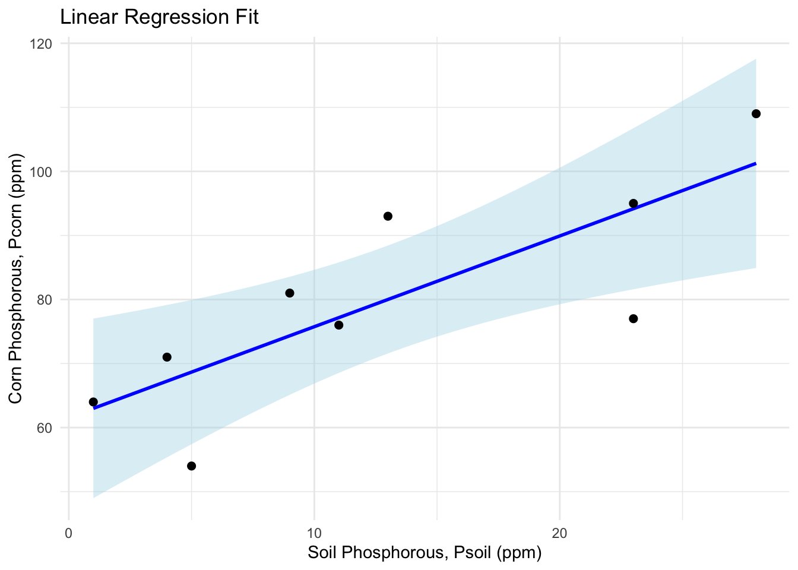

15 Wed Oct 14 - Regression with one predictor variable fixed by experiment
15.1 Assignment 3
Assignment 3 is due on Friday October 23.
15.2 Graduate project
Please read Dr. Schneider’s instructions for the grad project.
All graduate students need to email me stating when they are free to meet on Tuesday Oct 20 (9am-2pm) or Thursday Oct 22 (9am-2pm) to discuss your ideas for your grad project. I will then schedule you a 10 min block to meet with me.
15.3 Linear model for a continuous single predition (regression)
Predictor variable is fixed by experiment
Chapter 9.1 from Dr. Schneider’s notes considers a linear regression where the predictor variable is fixed by the experiment. Specifically:
Example 9.3.1 from Snedecor and Cochran (1989). The quantity of interest is the phosphorus content of corn (Pcorn in ppm), in relation to the phosphorus levels in samples of soils with experimentally fixed levels of phosphorus (Psoil in ppm)
data = read.csv("https://raw.githubusercontent.com/ahurford/biol-4605-data/refs/heads/main/data/corn.csv")
data## Psoil Pcorn
## 1 1 64
## 2 4 71
## 3 5 54
## 4 9 81
## 5 13 93
## 6 11 76
## 7 23 77
## 8 23 95
## 9 28 109There are \(n=9\) observations. Dr. Schneider’s notes initially report only 8 data points in the data table. In some subsequent calculations in Dr. Schneider’s notes sometimes 8 observations are considered and sometimes 9. We will use these 9 data points for all the calculations.
Rather than following the analysis from Dr. Schneider’s notes, we apply the analyses from Quinn and Keough.
15.3.1 Exploratory analysis
Quinn and Keough recommends fitting a LOESS smoother as an exploratory test to evaluate for a linear relationship. We consider boxplots of the explanatory (predictor) and response variables to look for symmetry, which suggests the residuals likely statisfy the normality assumption.
I load ggplot2 and ggExtra to complete this plot of the data.
library(ggplot2)
library(ggExtra)
# 2. Save the base ggplot with the LOESS line
main_plot <- ggplot(data, aes(x = Psoil, y = Pcorn)) +
geom_point(color = "black") +
geom_smooth(method = "loess", span = 0.75, color = "blue", se = FALSE) +
theme_minimal()
# 3. Add marginal boxplots to the top and right sides
final_plot <- ggMarginal(
main_plot,
type = "boxplot",
margins = "both", # Adds to both top and right
fill = "lightblue", # Color of the boxplots
size = 10 # Relative ratio of main plot size to marginal plot size
)
# 4. Display the plot
print(final_plot)
The LOESS plot can be compared to the analogous plots in Quinn and Keough (Figures 6.1 and 6.2 on p78 and 79). Our smoothed data seems to meet the assumption of linearity. The boxplots indicate no outliers.
We can only assess assumptions concerning residuals after fitting a model.
# 1. Fit the linear regression
model <- lm(Psoil ~ Pcorn, data = data)
# 2. Create data frame holding just the predicted and residual values
plot_data <- data.frame(
predicted = fitted(model),
residuals = residuals(model)
)
# 3. Build the ggplot
ggplot(plot_data, aes(x = predicted, y = residuals)) +
geom_point(color = "black") +
labs(
title = "Residuals vs. Predicted Plot",
x = "Predicted Values (Fitted)",
y = "Residuals"
) +
theme_minimal()
We are hoping not to see bowls, arches or cones (see Dr. Schneider’s notes). Bowls and arches might arise from non-linear relationships between the predictor and the response. Cones would indicate heteroskedasticity. This looks like our assumptions of linearity and homoskedasticity are statisfied.
Lastly, we can look for outliers.
# 1. Create a data frame with Cook's distance values and row names/indices
plot_data <- data.frame(
observation = rownames(data), # Or use 1:nrow(mtcars) for indices
cooks_d = cooks.distance(model)
)
# 2. Define a standard threshold rule-of-thumb: 4 / n
threshold <- 4 / nrow(data)
# 3. Create the ggplot
ggplot(plot_data, aes(x = reorder(observation, cooks_d), y = cooks_d)) +
geom_segment(aes(xend = observation, yend = 0), color = "gray") + # The sticks
geom_point(size = 3) + # The candy dots
geom_hline(yintercept = threshold, linetype = "dashed", color = "red", linewidth = 0.8) +
coord_flip() + # Flips to horizontal for much easier reading of row names
labs(
title = "Cook's Distance Plot",
subtitle = paste("Red dashed line indicates threshold (4/n) =", round(threshold, 3)),
x = "Observation",
y = "Cook's Distance",
) +
theme_minimal()
The Cook’s D test suggests no outliers for the linear model fitted to the data. The conclusion of our exploratory analysis is that it is reasonable to fit a linear model.
15.3.2 Write the model and state the hypothesis
Our exploratory analyses suggests that a linear regression is reasonable. Next, we will write our model and our hypothesis by following the steps in Dr. Schneider’s notes.
Our model is therefore, \[ P_{corn} = \alpha + \beta_{Psoil} P_{soil} + \epsilon, \]
where \(P_{corn}\) is phosphorous in the corn (ppm), \(P_{soil}\) is phosphorous in corn (ppm) and \(\alpha\) (ppm) and \(\beta_{Psoil}\) (unitless) are coefficients in our hypothesized linear relationship that will be estimated during fitting. The term \(\epsilon\) is the residual and we assume these residuals are independent and normally distributed, which we can write as \(\epsilon \sim N(0,\sigma^2)\).
Our null hypothesis is that \(\beta_{Psoil} = 0\). This means that there is no effect of soil phosphorous on corn phosphorous. At this point, you should decide to test this hypothesis using OLS or ML, but for pedagogical purposes we will illustrate both.
The fitted model is, \[ E[P_{corn}] = \hat{\alpha} + \hat{\beta}_{Psoil} P_{soil}, \]
where \(\hat{\alpha}\) and \(\hat{\beta}_{Psoil}\) are the fitted coefficients (using either OLS or ML). We can choose different values of \(P_{soil}\) to predict \(E[P_{corn}]\) (the expected value of \(P_{corn}\) without any noise), given our fitted model.
15.3.3 OLS fit of a linear regression of the Phosphourous data
To determine the values of \(\hat{\alpha}\) and \(\hat{\beta}_{Psoil}\) we can minimize the \(SS_{res}\), which is the approach of OLS.
We have already completed this OLS fit (when completing the exploratory analysis when we executed the lm() command). We named our model, when the fitting was done using OLS model.
To replicate the analysis that is reported in Quinn and Keough (Box 6.1, p77-78), we would like a print out of the estimated regression coefficients and their standard error (to estimate confidence intervals), the correlation coefficient (estimates the proportion of the variance that is unexplained by the model), and an ANOVA table to test our null hypothesis that the population variances estimated by the two mean squares for the model and the residual are the same. The commands below will print out these estimates.
##
## Call:
## lm(formula = Psoil ~ Pcorn, data = data)
##
## Residuals:
## Min 1Q Median 3Q Max
## -5.9455 -4.6825 -0.1706 3.1398 11.3720
##
## Coefficients:
## Estimate Std. Error t value Pr(>|t|)
## (Intercept) -23.5875 10.3913 -2.27 0.05748 .
## Pcorn 0.4573 0.1274 3.59 0.00886 **
## ---
## Signif. codes: 0 '***' 0.001 '**' 0.01 '*' 0.05 '.' 0.1 ' ' 1
##
## Residual standard error: 6.075 on 7 degrees of freedom
## Multiple R-squared: 0.648, Adjusted R-squared: 0.5977
## F-statistic: 12.89 on 1 and 7 DF, p-value: 0.008859This tells us that the fitted value of the intercept is \(\hat{\alpha} = -23.6\) ppm and the standard error for this estimate is 10.4 ppm. The fitted value of the slope of the relationship between \(P_{corn}\) and \(P_{soil}\) is \(\hat{\beta}_{Psoil} = 0.46\) with a standard error of 0.13. The p-value estimates the Type 1 error associated with this estimate: the probability of estimating a \(t-value\) of this magnitude under the null hypothesis that the true population value is \(\beta_{Psoil} = 0\). This probability is just 0.009, so it is very unlikely that the phosphorous in the soil has no effect on the phosphorous in the corn for this experiment.
In this print out the Multiple R-squared (\(R^2\)) is the coefficient of determination, and describes the proportion of variance in the response variable that is explained by the model. For our output, the linear model explains about 64.8% of the variance. The correlation coefficient is \(\pm \sqrt{\mbox{Multiple R-squared}}\). The Adjusted R-squared is a modified version of \(R^{2}\) that penalizes the score for every extra predictor variable you add to the model.
We would like to better understand the partitioning of the variance in the response variable in terms of the residual or error (unexplained variance) and the variance explained by the model, as well as the degrees of freedom for each. This is the sum squares table:
## Analysis of Variance Table
##
## Response: Psoil
## Df Sum Sq Mean Sq F value Pr(>F)
## Pcorn 1 475.64 475.64 12.887 0.008859 **
## Residuals 7 258.36 36.91
## ---
## Signif. codes: 0 '***' 0.001 '**' 0.01 '*' 0.05 '.' 0.1 ' ' 1We can calculate \(R^2\) as \(SS_{model}\)/\(SS_{Total}\) (from Dr. Schneider’s notes).
## [1] 0.6480077We should also partition our degrees of freedom. This is nicely explained in Dr. Schneider’s notes as:
\[ \begin{array}{llll} P_{corn} - \alpha & = & \beta_{Psoil} Psoil & + \ \ \epsilon \\ \mbox{df}_{Total} & = & \mbox{df}_{Model} & + \ \ \mbox{df}_{res} \\ n - 1 & = & 1 & + \ \ \mbox{df}_{res} \\ 8 & = & 1 & + \ \ 7 \\ \end{array} \]
Which is how we estimate 7 degrees of freedom for the residual (error) term. Our calculations show that 1 degree of freedom is used to estimate each of the slope and the intercept, and the df associated with the intercept is counted in the total sum of squares (\(SS_{Total}\)).
Our analysis suggest the null hypothesis of no effect is unlikely, but we should plot our data and our fitted model:
\[ E[P_{corn}] = -23.6 + 0.46 P_{soil} \]
as this plot should support and solidify our findings:
ggplot(data = data, aes(x = Psoil, y = Pcorn)) +
geom_smooth(method = "lm", formula = y ~ x, # Fit and overlay a linear model
color = "blue", fill = "lightblue", # Customize line and ribbon colors
se = TRUE) + # TRUE includes the 95% confidence interval
geom_point(color = "black", size = 2) + # Add data points
labs(
title = "Linear Regression Fit",
x = "Soil Phosphorous, Psoil (ppm)",
y = "Corn Phosphorous, Pcorn (ppm)"
) +
theme_minimal() 
This plot includes 95\(\%\) CIs for both the slope and the intercept, and so the resulting 95\(\%\) CI for the model has a bow-shape (i.e., fans out at the edges). Recall the interpretation of the CI: this interval has a 95\(\%\) chance of containing the true value of \(P_{corn}\) for any given value of \(P_{soil}\).
We can recover the 95\(\%\) CIs for our fitted parameters as:
## 2.5 % 97.5 %
## (Intercept) -48.1589386 0.9839166
## Pcorn 0.1560901 0.758597715.3.4 MLE of linear model coefficients and LRT.
Maximum likelihood estimation (MLE) is an alternative to OLS and involves defining a likelihood function. If we assume normally distributed errors our fitting is the same as OLS and the lm() function will estimate the log-likelihood for the fitted model.
## 'log Lik.' -27.87757 (df=3)We can compare models by calculating the likelihood ratio. We can fit our null hypothesis as a reduced model:
##
## Call:
## lm(formula = Pcorn ~ 1, data = data)
##
## Residuals:
## Min 1Q Median 3Q Max
## -26 -9 -3 13 29
##
## Coefficients:
## Estimate Std. Error t value Pr(>|t|)
## (Intercept) 80.00 5.62 14.23 5.78e-07 ***
## ---
## Signif. codes: 0 '***' 0.001 '**' 0.01 '*' 0.05 '.' 0.1 ' ' 1
##
## Residual standard error: 16.86 on 8 degrees of freedom## 'log Lik.' -37.66477 (df=2)The reduced model involves setting \(\beta_{Psoil} = 0\) and only and intercept is estimated. Additionally, likelihood ratio test statistic is calculated form the log-likelihoods as:
## 'log Lik.' 19.57439 (df=2)The likelihood ratio test statistic follows a Chi-squared distribution. We can use the package lmtest to perform a likelihood ratio test:
## Likelihood ratio test
##
## Model 1: Pcorn ~ 1
## Model 2: Psoil ~ Pcorn
## #Df LogLik Df Chisq Pr(>Chisq)
## 1 2 -37.665
## 2 3 -27.878 1 19.574 9.676e-06 ***
## ---
## Signif. codes: 0 '***' 0.001 '**' 0.01 '*' 0.05 '.' 0.1 ' ' 1We find that the full model is more likely than the reduced model given the data.
Model fit is usually assessed for ML by calculating the deviance, but this requires fitting a fully saturated model, and we will do this another time.
The likelihood ratio for this situation (OLS) in Dr. Schneider’s notes is calculated as:
\[ LR = \left(SS_{res}/SS_{total}\right)^{-n/2} \]
where the term inside the parenthesis is \(1-R^2\), which is the proportion of the variance which is unexplained (equal to 1 - the proportion of the variance that is explained by the model).
n = nobs(model) # Number of observations
SSres = SSTotal - SSmodel # Residual sum of squares
LR = (SSres/SSTotal)^(-n/2)
LR## [1] 109.7996Here are some additional notes from Dr. Schneider about interpreting the LR (see p17) that is calculated. Dr. Schneider interprets the likelihood ratio as the strength of evidence to support one model over another. He contrasts evidence with “uncertainty”, which he states is what is measured by the p-value. Dr. Schneider also recommends interpretting the strength of evidence as:
- LR < 10: inadequate evidence
- LR > 10: some evidence
- LR > 20: good evidence
- LR > 100: strong evidence
- LR > 1000: very strong evidence
15.3.5 Reporting and interpretting the analysis
Dr. Schneider’s notes involve several more steps. This includes making a statement about whether the sample is representative of the population.
Reporting the science conclusion is important. All of our analyses, and our graph of the model fit, indicate that the null hypothesis of no effect of soil phosphorous on corn phosphorous can be rejected. Additionally, we should discuss the effect size. Specifically, we estimate that a one unit increase in ppm of soil phosphorous is associated with a 0.45 ppm increase in corn phosphorous (i.e., the estimated slope of our regression). Dr. Schneider additionally tests whether this estimated slope is greater than 1, which is a test for amplification of the phosphorous in the soil in the corn. This was done by looking at the confidence intervals for the regression slope. We had estimated the 95\(\%\) confidence interval for the regression slope as \([0.16, 0.76]\). This interval does not overlap with 0, which we can understand to mean that our analysis does not support that there is no effect of soil phosphorous. In addition, it does not overlap with 1, which we can interpret to mean that not all of the soil phosphorous can be converted to corn phosphorous. (Note that due to using the 9 observations we are getting some different numbers than Dr. Schneider’s notes).